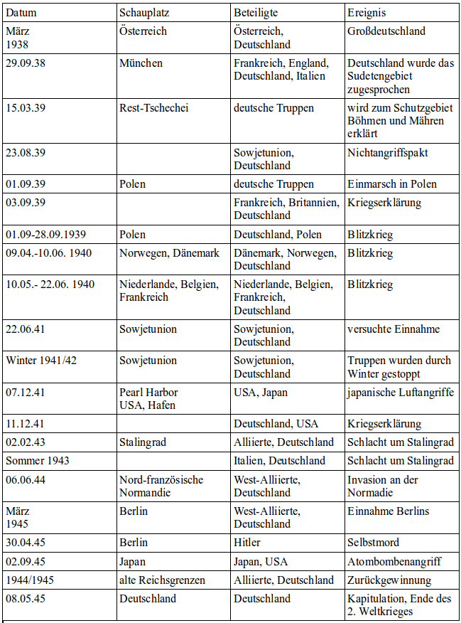
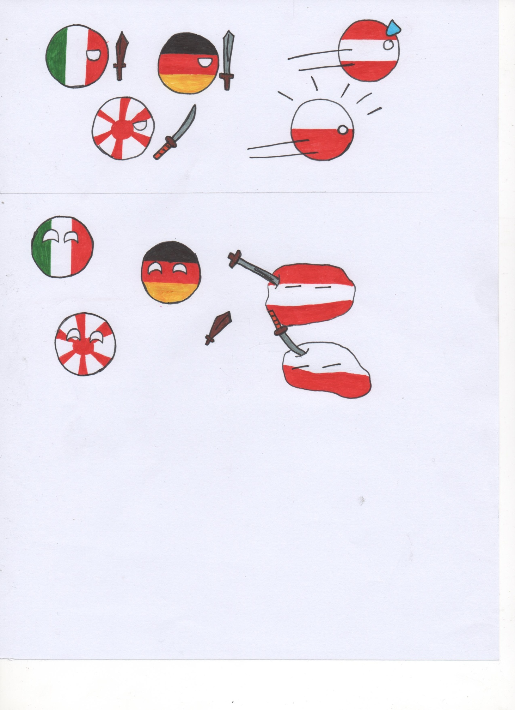
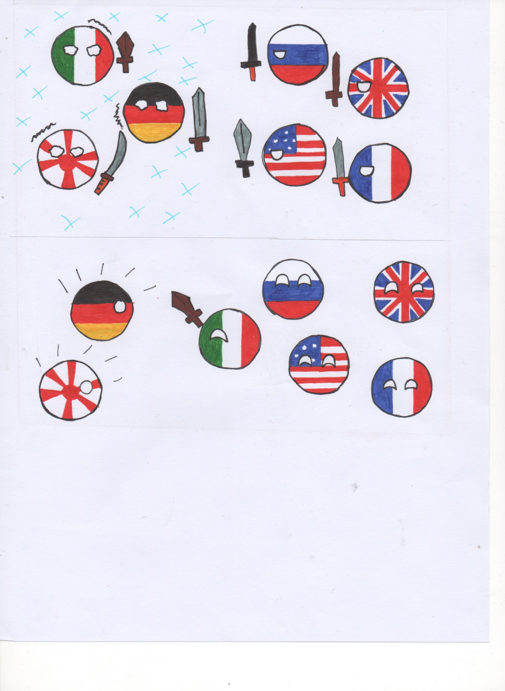
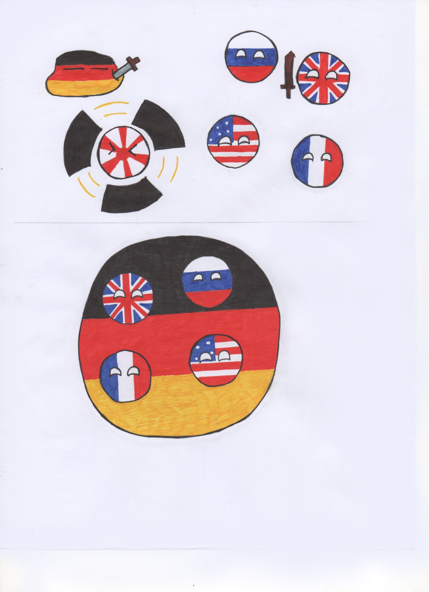

Kriegsverlauf
Der Kriegsverlauf im Überblick

1.Phase: 1939 – 1943
- militärische Erfolge der Achsenmächte
- erfolgreiche Blitzkriege im Norden, Osten und Westen mit großen territorialen Gewinnen
2. Phase: Wendepunkt
- 1) Schlacht um Stalingrad (1943)
- große Verluste, z.T. Durch harten Winter
- 2) Italien fällt als Verbündeter aus
3. Phase: 1943 - 1945
- Rückeroberung durch die Alliierten in Ost, West und Süd bis zur bedingungslosen Kapitulation des Deutschen Reiches am 8. Mai 1945
Schaubilder zu den einzelnen Phasen
| 1. Phase |
2. Phase |
3. Phase |
|

|

|

|